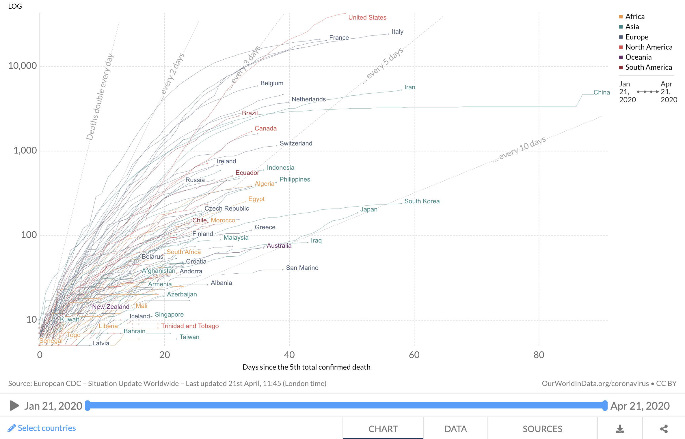

Daily and total
Total
Daily
confirmed deaths, cases, and tests
confirmed cases
tests
confirmed deaths and cases
confirmed cases and tests
confirmed deaths
confirmed cases and tests
in
China, France, and Italy
Germany
The Netherlands
per million people.
Shown
is the 3 day rolling average
is the 5 day rolling average
are the normal numbers
on an indexed timeline
on a normal timeline
Limited testing and challenges in the attribution of the cause of death means that the number of confirmed deaths may not be an accurate count of the true number of deaths from COVID-19.
per million
